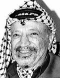

[Temaside] [Faktaservice nr. 6]
Faktaservice nr. 6 95/96, JANUAR 1996
Palestinernes første valg på et nasjonalt selvstyreråd er nok en milepæl for Osloavtalen. Problemene underveis - fra "Oslo 1" til "Oslo 2" - og nå den feberaktige valgkampen, har ikke klart å avspore fredsprosessen mellom israelere og palestinere. For Yasir Arafat har det vært viktig å få legitimert sin myndighet gjennom demokratisk valg.
Yasir Arafat fikk 88,1 prosent av stemmene ved det palestinske valget. 
PALESTINERNE TIL VALG: Historisk milepæl
20. januar gikk over én million palestinere til valgurnene for å velge president og nasjonalforsamling for Vestbredden og Gaza.
Opptakten, kampanjen, gjennomføringen og opptellingen av dette første nasjonale palestinske valget har blitt fulgt med argusøyne. Bortimot 1000 observatører, alle i blå vester, har trålt valgmøter, valgkontorer og valgkretser.Kvinnelig motkandidat
7000 palestinske lærere har gått fra dør til dør for å registrere velgere: Av de 88 kandidatene til «Den nasjonale myndighet», eller Nasjonalrådet, er bare fire prosent kvinner. Til gjengjeld er det en kvinne, 72-årige Samiha Khalil, som har vært Yasir Arafats eneste utfordrer til presidentembedet.
Samiha Khalil er ingen hvem som helst. Hun er allerede medlem av PNC, Det palestinske nasjonalråd (palestinernes nasjonalforsamling i eksil), og hun har bygget opp Vestbreddens største velferdsorganisasjon for kvinner. Hun vil stanse fredsprosessen inntil staten Palestina er opprettet med internasjonale grenser.De kristne palestinerne
Syv palestinske byer og 450 landsbyer har vært oversvømmet av vimpler og farverike valgplakater. Noen av kandidatene har investert i enorme, farvesprakende plakater på husveggene, avisannonser og rådyre transparenter strukket over gatene.
«Et stort og viktig skritt på vei mot palestinsk demokrati», sier de palestinske lederne. Ikke alle er helt enige: Av de 88 kandidatene er seks forbeholdt de kristne palestinerne og én samaritanerne (i Nablus). Den lille samaritaner-gruppen på 600 palestinere lever strengt etter den jødiske Torah’en, men har ellers ikke tatt opp i seg andre av jødenes senere tradisjoner eller skrifter.
Problemet er at i de områdene hvor plasser er øremerket de 70 000 kristne, i byene Betlehem, Jerusalem (fem muslimske og to kristne mandater), Ramallah og Gaza, har kristne kandidater kjempet om de få plassene. Selv om de i kraft av sin store personlige popularitet skulle oppnå flere stemmer enn deres muslimske motkandidater, får de ikke komme inn i Nasjonalrådet.Selvsensur
I de palestinske avisene har den redaksjonelle dekningen av valgkampanjene vært sterkt preget av selvsensur. To redaktører ble for noen måneder siden arrestert av Arafats politi for måten de redigerte valgkampstoffet på, dette har ikke fristet til vågal politisk journalistikk i de palestinske avisredaksjonene.Hamas-boikott
Vestbredden er delt inn i 11 valgdistrikter, Gaza i fem. Ettersom det ikke er snakk om proporsjonale valg, men at vinnerne tar alt, er det reell fare for at for eksempel Hamas-tilhengerne med 10-15 prosent støtte i befolkningen, og de sekulære venstre-partiene med undre tre prosent - ifølge palestinsk gallup - faller helt ut av det nye rådet. Hamas stiller offisielt ikke til valg og oppfordrer sine tilhengere til ikke å stemme, men en rekke uavhengige kandidater markedsfører sin nære tilknytning til bevegelsen.
Men selv Arafat og hans Fatah håper at opposisjonen ikke bare blir av symbolsk karakter.Utenfor Jerusalem
Jerusalem-spørsmålet er like følsomt i valgkampen som ellers i fredsprosessen. Israelerne betrakter Jerusalem som jødisk by og dermed ikke et palestinsk valgdistrikt. Her har det vært forbud mot utendørs valgmøter og heller ikke valglokaler har vært tillatt. Så palestinerne som er stemmeberettigede der, måtte avgi stemme ved ett av fem øremerkede postkontorer i Øst-Jerusalem.
Israelerne insisterte på at avstemningen i Jerusalem skulle være pr. post. Følgelig har opptellingen skjedd utenfor Jerusalems grenser. Når så få som 5000 kan avgi stemme i Jerusalem, skyldes det at bare de som sogner til de fem «valgpostkontorene» i Øst-Jerusalem, kunne stemme der. For de andre drøyt 40 000 Jerusalem-velgerne ble det en heller tungvint valgdag, idet de måtte reise over bygrensen for å avgi stemme.Ikke mistillitsforslag
Det nyvalgte Nasjonalrådet vil få både lovgivende og utøvende makt; presidenten vil ha fullmakt til å oppnevne en «regjering», antagelig bestående av ca. 25 medlemmer. Nå er det også tatt med en klausul om at presidenten kan utvide denne «regjeringen» med folk utenfor Nasjonalrådet. Presidenten kan videre ta initiativ til valg, han kan forkaste lover som Rådet har vedtatt, og utskrive spesielle forordninger. Og i motsetning til «regjeringen» kan det ikke fremmes mistillitsforslag mot presidenten - som i tillegg vil ha sete i Nasjonalrådet. Alt dette vil, etter alt å dømme, gi Yasir Arafat utstrakt makt. Noen mener betenkelig stor. Tittelen på den nyvalgte lederen for palestinerne skulle, ifølge avtalen, være «rais», en arabisk lederbetegnelse. I den engelske oversettelsen er det blitt president, men israelrene benevner den som formann.Kilde: Peter Beck, Aftenposten, The World Book Encyclopedia, 1995
[Innhold] [Info] [Aftenposten hjemmeside] [Til Fakta hovedside]